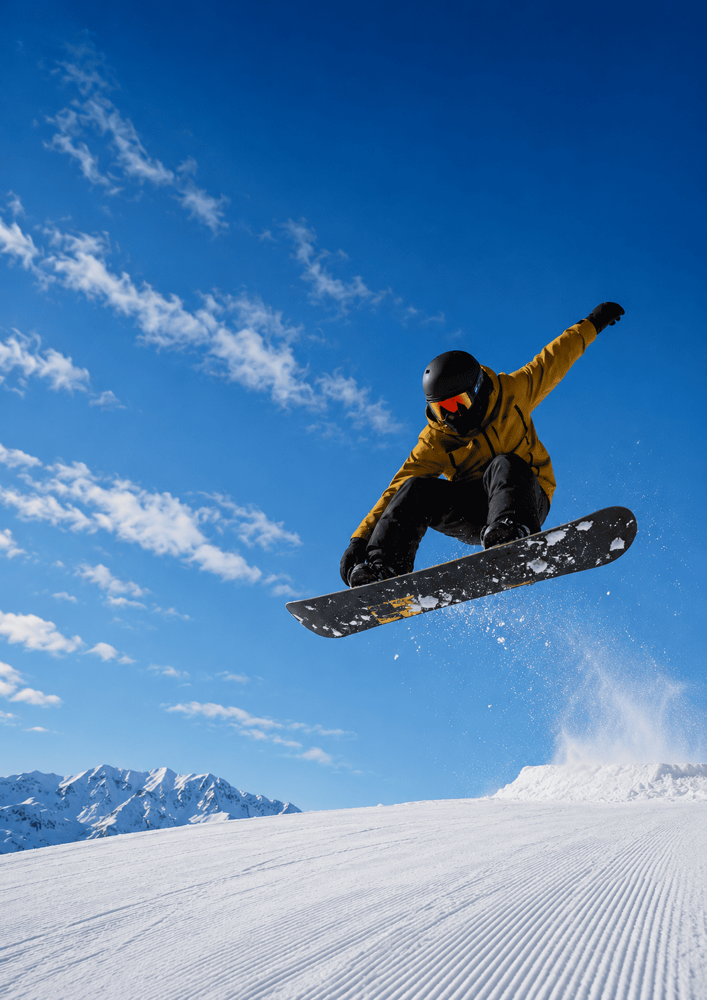
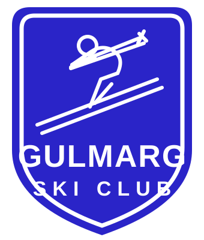
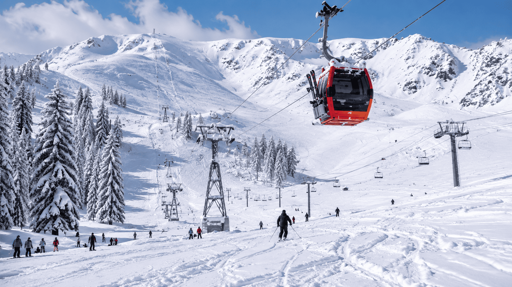

Snowboarding
Same mountain, one board — dedicated snowboard coaching.
Explore

Learn on the gentle meadow, graduate to the Gondola, and — when you're ready — drop into some of the highest lift-served terrain on Earth.

Why Gulmarg
Gulmarg is a rare thing: a world-class big mountain with a beginner's heart. The meadow's wide, forgiving learning slopes sit minutes from your hotel, while the Gondola — one of the highest cable cars in the world — opens 1,300 vertical metres of progression above them.
Dry Himalayan powder, uncrowded pistes and instructors who've skied here their whole lives. There is simply no better place in Asia to fall in love with skiing.
Programmes
₹32,500 / person
7 days · all-inclusive
₹38,900 / person
7 days · all-inclusive
₹54,000 / person
6 days · guided
What's Covered
Your Learning Journey
Gear fitting, balance drills and first glides on gentle learning slopes.
Linked turns, speed control and confident stops by day three.
Phase 1 blues at 3,000 m with your instructor on your shoulder.
Off-piste technique and, when you're ready, Apharwat's bowls.
The Mountain
From the learner meadow at the base to Apharwat's off-piste bowls at 4,000 m, here's how Gulmarg's terrain stacks up — and where our courses take you.
Terrain shown is illustrative. Daily run choices depend on snow, weather and avalanche conditions — always follow your instructor's and the ski patrol's guidance on the mountain.
Good to Know
Most guests link confident turns within three days and ride the Gondola to Phase 1 by day five. Our seven-day beginner course is designed around exactly that arc.
Skis, boots, poles, helmet, learning-slope lift access, instructor coaching in groups of six or fewer, mountain lunches and Gulmarg transfers. Accommodation packages are available too.
Yes. Beginners learn on dedicated gentle slopes far from fast traffic, and progression to bigger terrain happens only when your instructor signs it off.
Our advanced programme covers off-piste technique, avalanche awareness and guided descents of Apharwat's bowls with avalanche-certified guides carrying full safety kit.
Thermal base layers, a warm mid-layer, waterproof gloves, sunglasses and sunscreen. Jackets, pants and all technical equipment can be rented through us.
December weeks fill first. Tell us your dates and level, and we'll hold your place on the mountain.